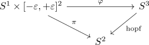

hopf map from S^3 as fibre bundle
Proposition
\begin{align*}
S^3 \rightarrow& \mathbb{C}\mathbb{P}^1 \simeq S^2\\
(z_0,z_1) \mapsto& [z_0 : z_1]
\end{align*}
where $S^3 \subseteq \mathbb{R}^4 \simeq \mathbb{C}^2$
is a Fibre bundle with fibres homeomorphic to $S^1$
Proof
Let $[z_0 : z_1] \in \mathbb{C}\mathbb{P}^1$. Then w.l.o.g. we may assume that $z_0 \neq 0$.
Define
\begin{align*}
\pi: S^1 \times [- \varepsilon, \varepsilon] \times [- \varepsilon, \varepsilon] \rightarrow& \mathbb{C}\mathbb{P}^1 \\
(x,y,z) \mapsto& [\mathrm{e}^{\mathrm{i} 2\pi x} \cdot (z_0 + y) : \mathrm{e}^{\mathrm{i} 2\pi x} \cdot (z_1 + z)]
\end{align*}
Define
\begin{align*}
\varphi: S^1 \times [- \varepsilon, \varepsilon] \times [- \varepsilon, \varepsilon] \rightarrow& S^3 \\
(x,y,z) \mapsto& (\mathrm{e}^{i 2 \pi x} (z_0 + y), (\mathrm{e}^{i 2 \pi x} (z_1 + z))/\lambda
\end{align*}
where $\lambda = \|((z_0 + y), (z_1 + z))\|$ is the factor such that the point lies in the sphere.
Then as $\pi$ factors through $\varphi$ it follows that $\varphi$ is continuous.
Furthermore we get the evident diagram

\begin{align*}
U \coloneqq \mathrm{im}(S^1 \times (- \varepsilon, \varepsilon) \times (-\varepsilon, \varepsilon))
\end{align*}
Note that $U$ is open (cf. surjective map from a compact space to a hausdorff space as quotient map). Hence restriction to $\mathrm{hopf}^{-1}[U]$ is welldefined blabla